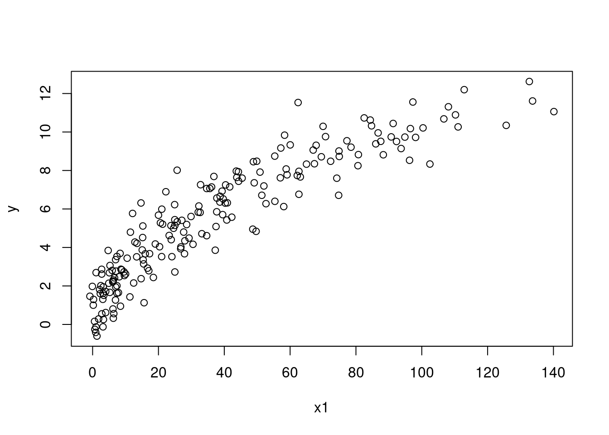
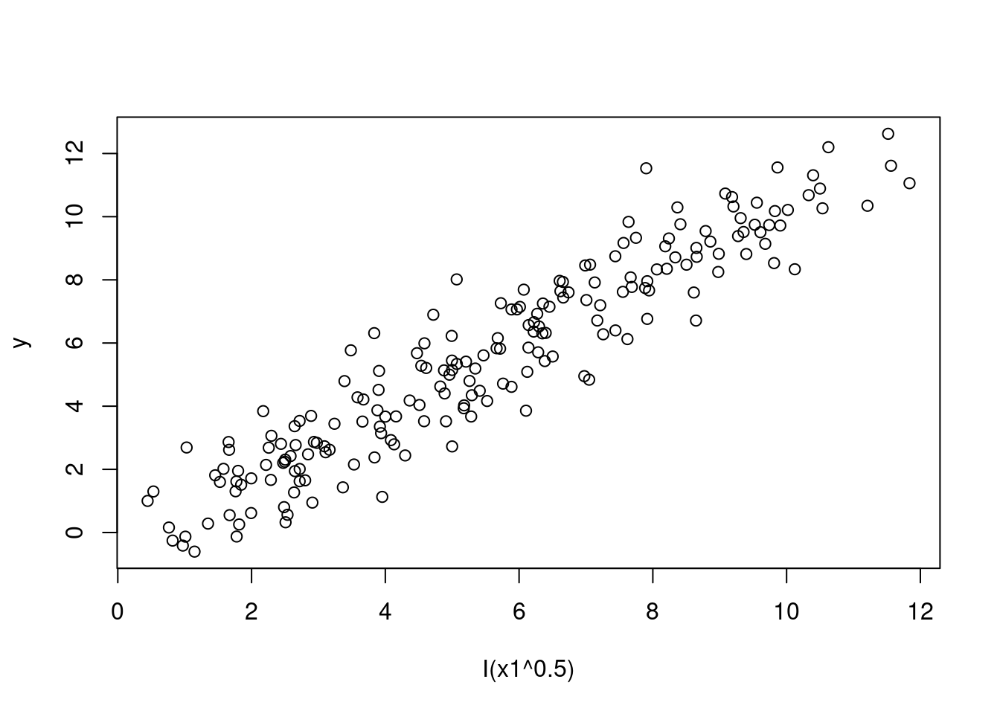
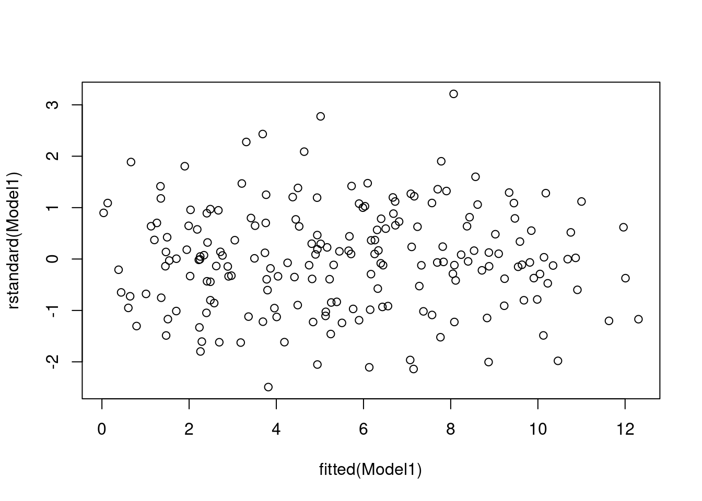
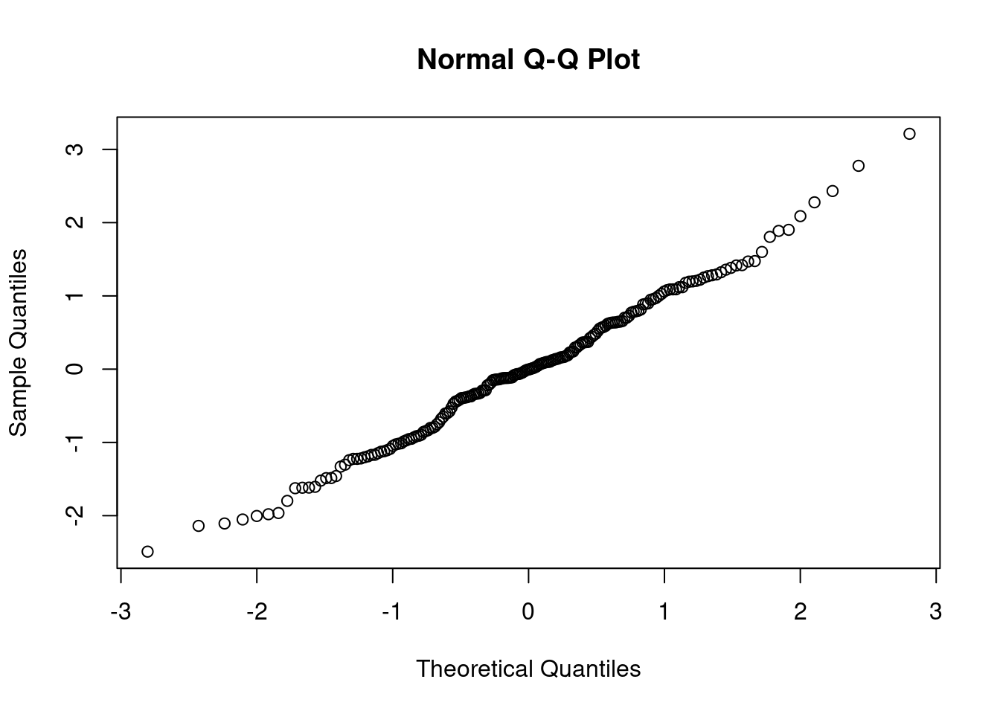
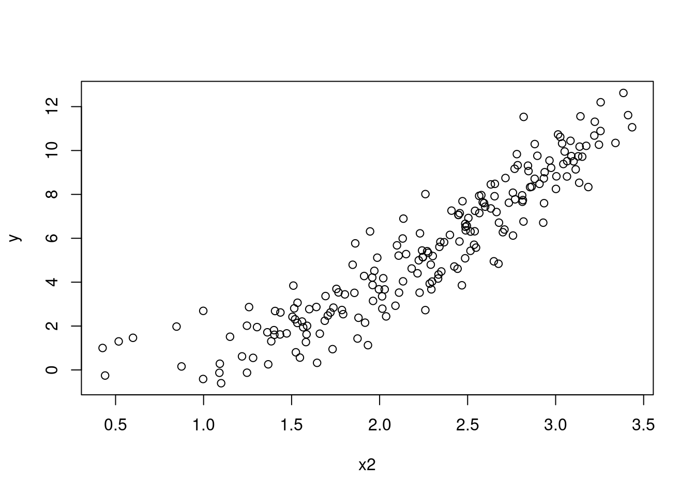
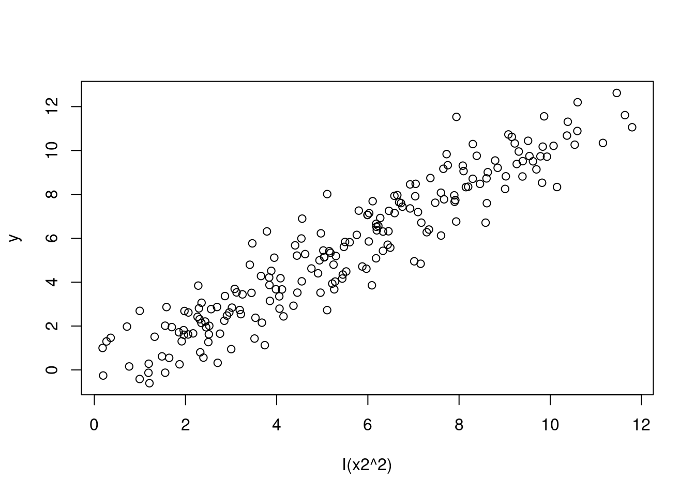
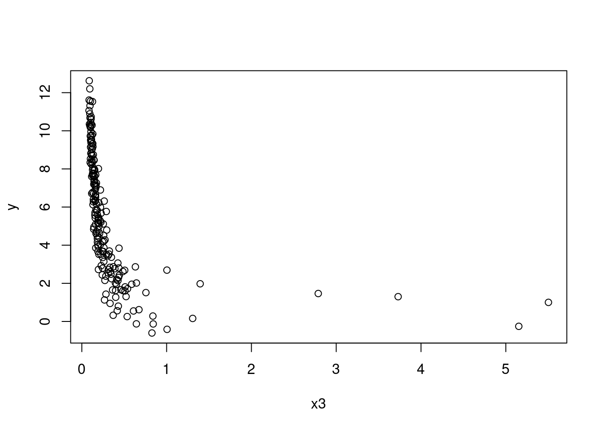
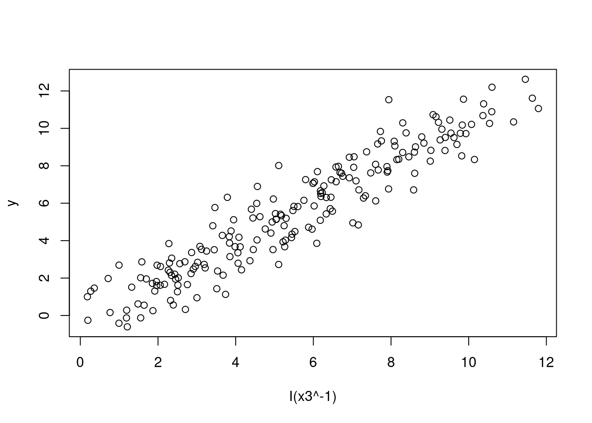
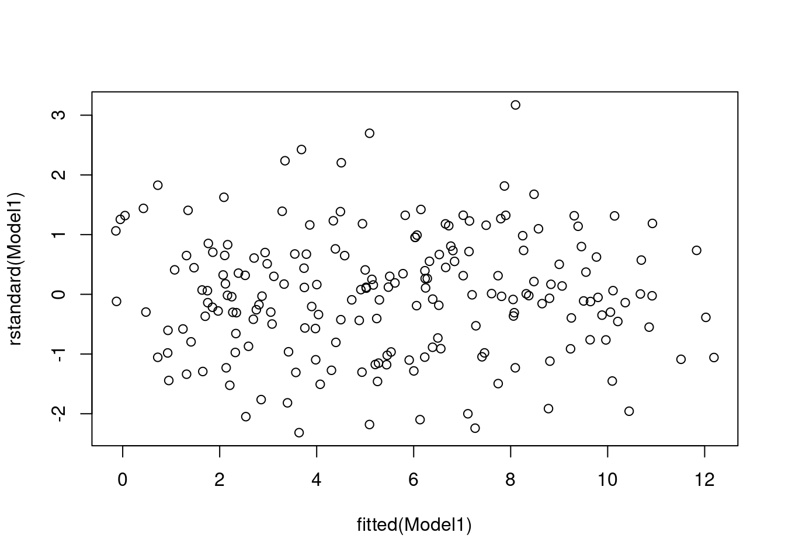
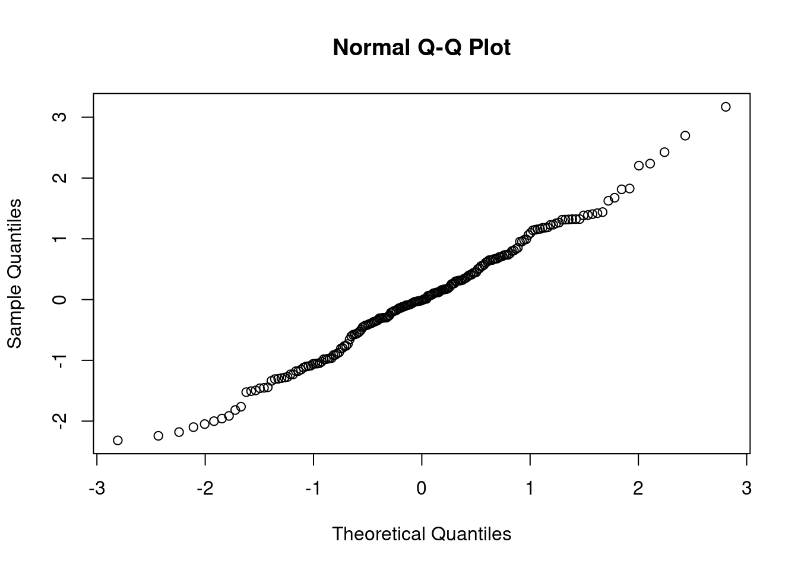

5 Exercise 1 - Transformation of Predictors
The data frame SIMDATAXT contains simulated data for the response, y, and predictors, \(x_1\), \(x_2\), and \(x_3\).
We will apply appropriate transformations to \(x_1\), \(x_1\), and\(x_1\) to linearise the relationships between the response and predictors one at a time.
Remember that when you use operators such as \(\text{+, -, ^, *, }\) you must use the identity function, \(I()\) , to inhibit the interpretation of your formula operator as an arithmetic operator
(a) Below are some questions to help you follow the right steps. Starting with \(x_1\):
Does the plot of \(x_1\) against \(Y\) appear linear?
Which transformation produces a scatterplot that seem to present a linear relationship?
Do both the residual plots, as well as the and the coefficient of determination, \(R^2\) support this transformed model?
If no, go back to ii.
# Plot of x1 against Y
plot(y ~ x1, data = SIMDATAXT) # This appears non-linear
# Plot of data with a square root transformation
plot(y ~ I(x1^0.5), data = SIMDATAXT) # This appears linear
# Define your linear model
Model1 <- lm(y ~ I(x1^0.5), data = SIMDATAXT)
# Get the residual plots
plot(rstandard(Model1) ~ fitted(Model1))
qqnorm(rstandard(Model1))
#Get the coefficient of determination, R-squared
summary(Model1)##
## Call:
## lm(formula = y ~ I(x1^0.5), data = SIMDATAXT)
##
## Residuals:
## Min 1Q Median 3Q Max
## -2.6885 -0.8014 -0.0047 0.6989 3.4644
##
## Coefficients:
## Estimate Std. Error t value Pr(>|t|)
## (Intercept) -0.44101 0.17178 -2.567 0.011 *
## I(x1^0.5) 1.07688 0.02769 38.890 <2e-16 ***
## ---
## Signif. codes: 0 '***' 0.001 '**' 0.01 '*' 0.05 '.' 0.1 ' ' 1
##
## Residual standard error: 1.083 on 196 degrees of freedom
## (2 observations deleted due to missingness)
## Multiple R-squared: 0.8853, Adjusted R-squared: 0.8847
## F-statistic: 1512 on 1 and 196 DF, p-value: < 2.2e-16# 0.8853 is high enough to indicate a good fit and the assumpions here are met.
(b) Repeat for \(x_2\)
# Plot of x2 against Y
plot(y ~ x2, data = SIMDATAXT) # This appears non-linear
# Plot of data with a squared transformation
plot(y ~ I(x2^2), data = SIMDATAXT) # This appears linear
# Define your linear model
Model1 <- lm(y ~ I(x2^2), data = SIMDATAXT)
# Get the residual plots
plot(rstandard(Model1) ~ fitted(Model1))
qqnorm(rstandard(Model1))
#Get the coefficient of determination, R-squared
summary(Model1)##
## Call:
## lm(formula = y ~ I(x2^2), data = SIMDATAXT)
##
## Residuals:
## Min 1Q Median 3Q Max
## -2.5088 -0.7309 -0.0139 0.7235 3.4310
##
## Coefficients:
## Estimate Std. Error t value Pr(>|t|)
## (Intercept) -0.3336 0.1679 -1.987 0.0482 *
## I(x2^2) 1.0619 0.0272 39.040 <2e-16 ***
## ---
## Signif. codes: 0 '***' 0.001 '**' 0.01 '*' 0.05 '.' 0.1 ' ' 1
##
## Residual standard error: 1.087 on 198 degrees of freedom
## Multiple R-squared: 0.885, Adjusted R-squared: 0.8844
## F-statistic: 1524 on 1 and 198 DF, p-value: < 2.2e-16# 0.885 is high enough to indicate a good fit and the assumpions here are met.
(c) Repeat for \(x_3\)
# Plot of x3 against Y
plot(y ~ x3, data = SIMDATAXT) # This appears non-linear
# Plot of data with an inverse transformation
plot(y ~ I(x3^-1), data = SIMDATAXT) # This appears linear
# Define your linear model
Model1 <- lm(y ~ I(x3^-1), data = SIMDATAXT)
# Get the residual plots
plot(rstandard(Model1) ~ fitted(Model1))
qqnorm(rstandard(Model1))
#Get the coefficient of determination, R-squared
summary(Model1)##
## Call:
## lm(formula = y ~ I(x3^-1), data = SIMDATAXT)
##
## Residuals:
## Min 1Q Median 3Q Max
## -2.5088 -0.7309 -0.0139 0.7235 3.4310
##
## Coefficients:
## Estimate Std. Error t value Pr(>|t|)
## (Intercept) -0.3336 0.1679 -1.987 0.0482 *
## I(x3^-1) 1.0619 0.0272 39.040 <2e-16 ***
## ---
## Signif. codes: 0 '***' 0.001 '**' 0.01 '*' 0.05 '.' 0.1 ' ' 1
##
## Residual standard error: 1.087 on 198 degrees of freedom
## Multiple R-squared: 0.885, Adjusted R-squared: 0.8844
## F-statistic: 1524 on 1 and 198 DF, p-value: < 2.2e-16# 0.885 is high enough to indicate a good fit and the assumpions here are met.
(d) Which selection of variables therefore needed to be transformed?